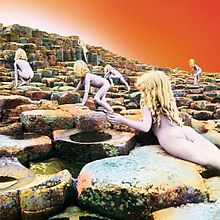

Led Zeppelin byla anglická rocková skupina, která se stala jednou z nejvýznamnějších, nejúspěšnějších a nejvlivnějších v historii rockové hudby. V roce 1968 ji pod názvem The New Yardbirds založil kytarista Jimmy page. Sestavu tvořil zpěvák Robert Plant, hráč na bicí nástroje John Bonham a hráč na basovou kytaru John Paul Jones. Skupina čerpala vliv z více hudebních zdrojů a žánrů. Díky stylu jejich hudby, který se zakládal na tvrdém blues rockovém kytarovém zvuku, se skupina Led Zeppelin obecně považuje za předchůdce heavy metalu a jednoho ze zakladatelů hard rocku
I přes více než třicet let po rozpadu skupiny v důsledku smrti Johna Bonhama v roce 1980 se skupina Led Zeppelin vzhledem k uměleckým a komerčním úspěchům obecně považuje za vlivnou. Nachází se na seznamu nejprodávanějších hudebních umělců na světě a v USA je na čtvrtém místě seznamu nejprodávanějších hudebních umělců všech dob. Podle některých zdrojů skupina na celém světě prodala více než 200 milionů hudebních nosičů, zatímco jiné zdroje udádějí prodej 300 milionů nosičů. Podle Asociace amerického hudebního průmyslu se jich pouze ve Spojených státech prodalo 111 milionů.
Po smrti bubeníka Johna Bonhama, který byl podle ostatních členů nenahraditelný, ukončila skupina v roce 1980 svoji činnost, ale i přesto se později účastnili některých akcí, jako např. v roce 1985 Live Aid na stadioně Wembley. V roce 2007 zbývající hudebníci uspořádali jediný koncert, který měl být podle jejich vlastních slov posledním.
Nejprodávanější alba
| Obal | Název | Rok vydání | Prodejnost |
|---|---|---|---|
 |
Led Zeppelin IV |
1971 |
38 mil. |
 |
Led Zeppelin II |
1969 |
22,5 mil. |
|  | Houses of the Holy |
1973 |
18 mil. |
 |
Physical Graffiti |
1975 |
18 mil. |